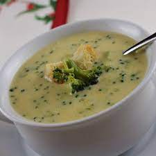

Broccoli Cheese Soup

Description
If you have a hard time getting children to eat broccoli, this recipe is for you.
Ingredients
- 3 10 ounce packages frozen chopped broccoli
- 3 14.5 ounce cans chicken broth
- 6 tablespoons margerine
- 1 onion, chopped
- 1/2 cup all-purpose flower
- 2 cups milk
- 1 1/2 lbs processed cheese food (e.g. velveeta)
- 1 pinch ground white pepper
Steps
- In a large pot over medium heat, simmer the broccoli in the broth for 15 minutes. In a separate skillet over medium heat, melt the butter or margarine, add the onions and saute for 5 minutes, or to desired tenderness.
- Add the flour to the onions and stir well, forming a pasty substance. Gradually add the milk and stir until thick. Add this mixture to the broccoli mixture in the pot and stir well. Then add the cheese, stirring until melted. Finally, add the pepper. (Note: Be careful not to let the soup boil, or the cheese will break down.)